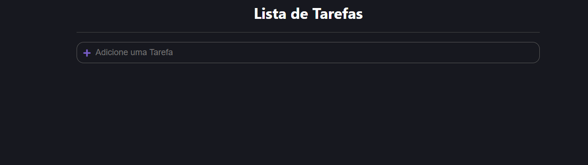
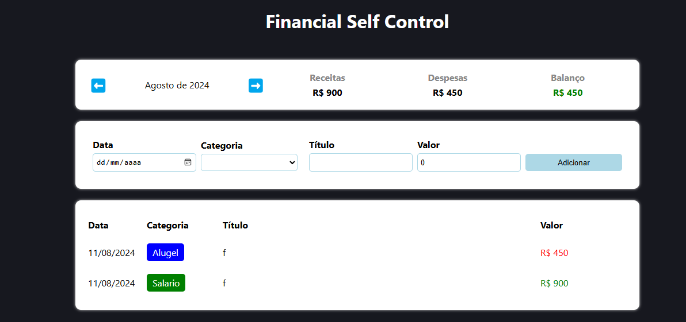

Sobre Mim
Como desenvolvedor full stack, minha missão é criar soluções tecnológicas inovadoras que superem as expectativas dos clientes. Com dois anos de experiência no mercado, desenvolvi uma especialização em Angular e Laravel, permitindo-me construir aplicações web robustas e escaláveis. Minha experiência inclui também cypress, Node.js, PHP e SQL, o que me confere uma visão abrangente e flexível para enfrentar diversos desafios no desenvolvimento de software.
Projetos
Vitality PLUS
Um sistema de registro nutricional inovador que calcula alimentos diários e gerencia metas e objetivos personalizados de saúde.
Ver ProjetoTODO List
Uma aplicação para gerenciamento de tarefas que permite adicionar, organizar e excluir itens de maneira intuitiva e prática.
 Ver ProjetoFinança APP
Uma solução completa para gerenciamento financeiro pessoal, permitindo o cadastro, organização e acompanhamento das finanças de forma eficiente.
 Ver ProjetoHabilidades
Angular
Especialista em Angular, desenvolvendo aplicações web escaláveis e de alto desempenho, com foco em criar interfaces de usuário interativas e responsivas.
Laravel
Profundo conhecimento em Laravel para construir aplicações web seguras e eficientes, utilizando práticas recomendadas e recursos avançados do framework.
JavaScript
Experiência avançada em JavaScript, incluindo ES6+ e frameworks modernos, para desenvolver funcionalidades dinâmicas e interativas.
Node.js
Construção de back-ends eficientes e escaláveis com Node.js e Express, com ênfase em performance e integração com APIs e bancos de dados.
PHP
Experiência em PHP para desenvolvimento de back-end, focando na criação de soluções robustas e integração com bancos de dados relacionais.
SQL
Capacidade para gerenciar e manipular bancos de dados relacionais utilizando SQL, garantindo a eficiência e integridade dos dados.
Cypress
Experiência em testes automatizados com Cypress, garantindo a qualidade e estabilidade das aplicações por meio de testes end-to-end confiáveis e eficientes.
Contato
Entre em contato comigo através das minhas redes sociais ou envie um email diretamente.